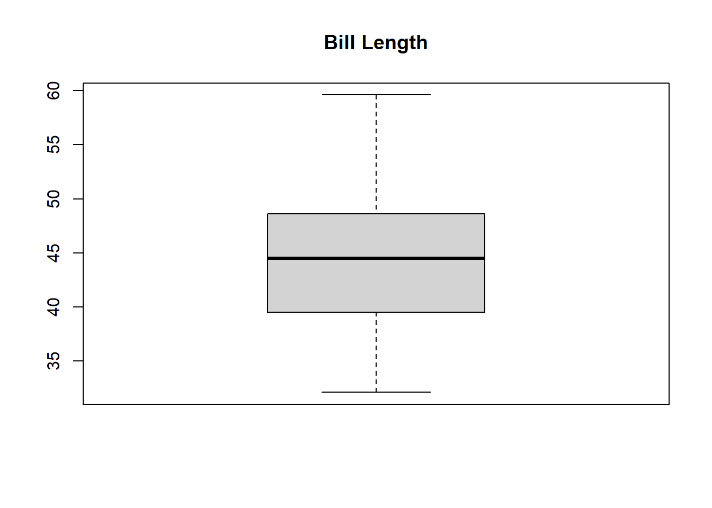
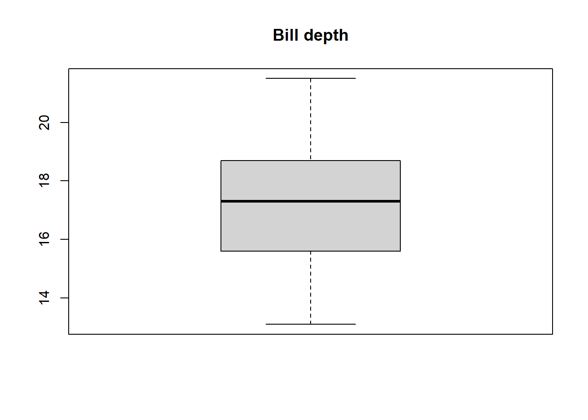
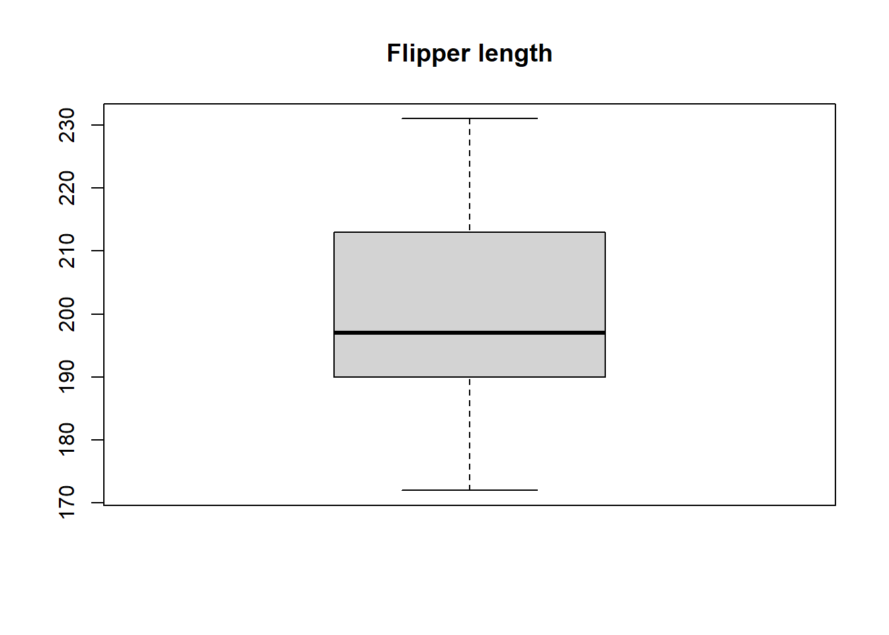
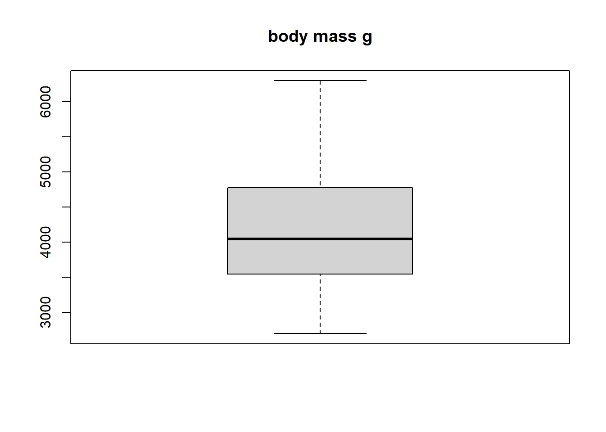
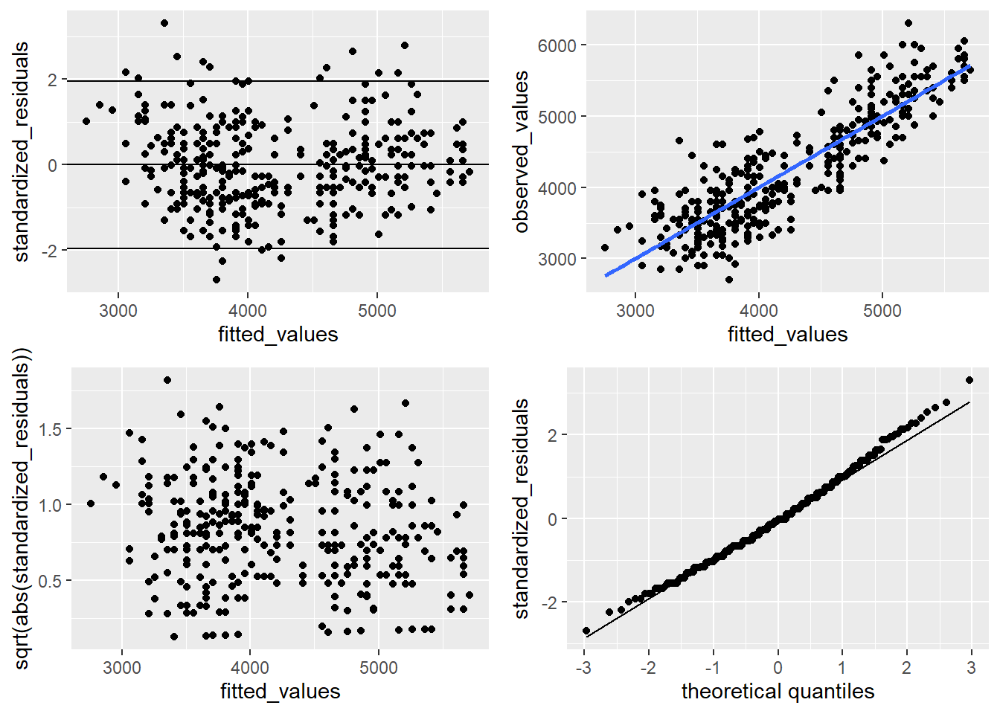
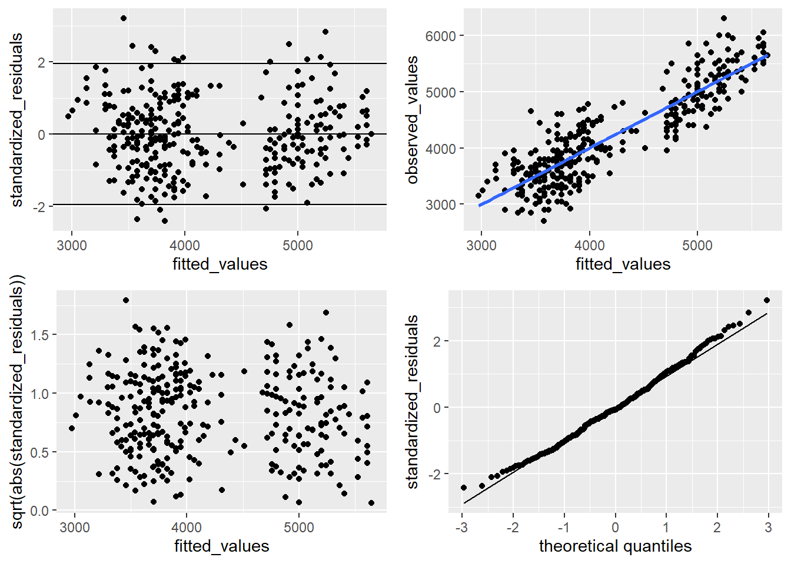
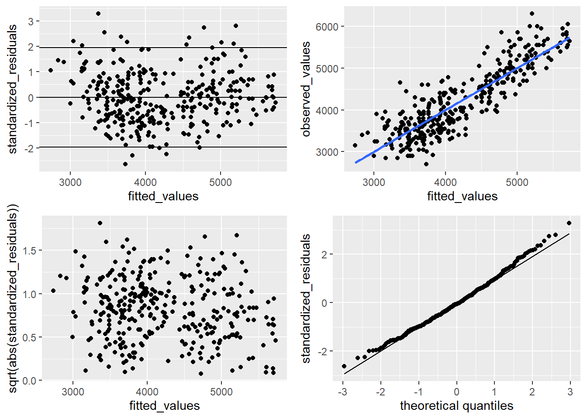
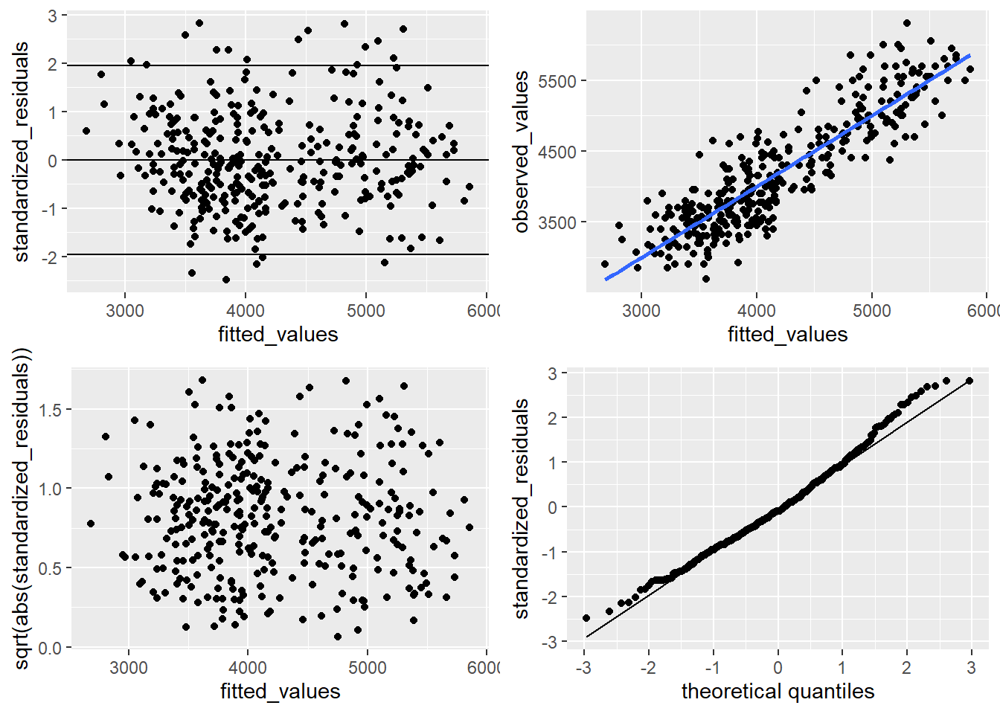
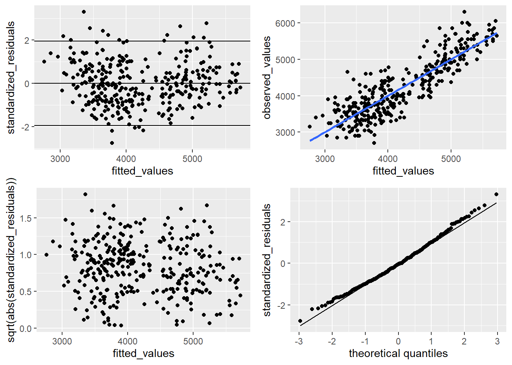
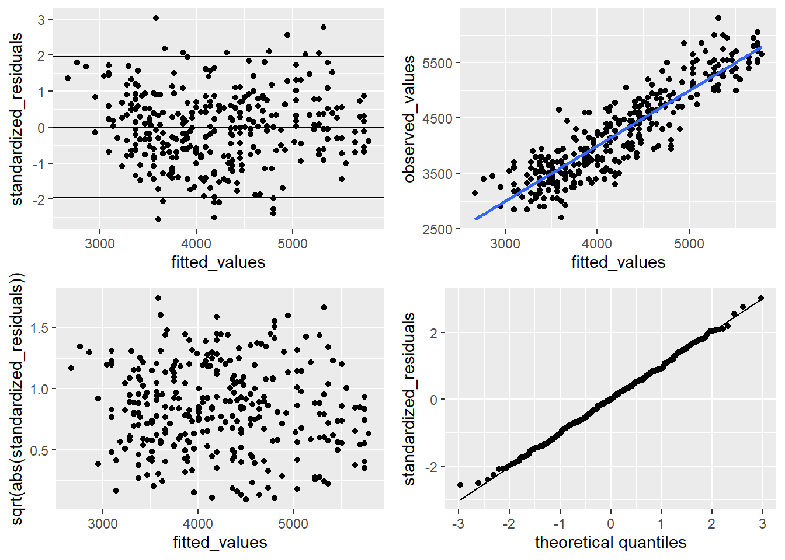

We will use the palmerpenguins data set. It is a data set with information on penguins. We will use the body_mass_g as the response variable and species, island, sex, culmen_length_mm, culmen_depth_mm, flipper_length_mm, and year as explanatory variables.
dat <- palmerpenguins::penguinsdat <- dat[complete.cases(dat),]# 1. Preview the datasethead(dat)
species island bill_length_mm bill_depth_mm
Adelie :146 Biscoe :163 Min. :32.10 Min. :13.10
Chinstrap: 68 Dream :123 1st Qu.:39.50 1st Qu.:15.60
Gentoo :119 Torgersen: 47 Median :44.50 Median :17.30
Mean :43.99 Mean :17.16
3rd Qu.:48.60 3rd Qu.:18.70
Max. :59.60 Max. :21.50
flipper_length_mm body_mass_g sex year
Min. :172 Min. :2700 female:165 Min. :2007
1st Qu.:190 1st Qu.:3550 male :168 1st Qu.:2007
Median :197 Median :4050 Median :2008
Mean :201 Mean :4207 Mean :2008
3rd Qu.:213 3rd Qu.:4775 3rd Qu.:2009
Max. :231 Max. :6300 Max. :2009
# 2. Check for missing valuesprint("Check total missing values per column")
[1] "Check total missing values per column"
colSums(is.na(dat))
species island bill_length_mm bill_depth_mm
0 0 0 0
flipper_length_mm body_mass_g sex year
0 0 0 0
# 3. Check data types#str(dat)# 4. Handle outliers# Identify outliers by visualizing (e.g., using boxplots)boxplot(dat$bill_length_mm, main ="Bill Length")

boxplot(dat$bill_depth_mm, main ="Bill depth")

boxplot(dat$flipper_length_mm, main ="Flipper length")

boxplot(dat$body_mass_g, main ="body mass g")

We ask the following question:
How well can we predict the body mass of a penguin based on species and flipper length?
Are predictions improved by including other variables?
We encourage you to take as much inspiration from the lecture slides/notes as you feel like :)
library(ggplot2) library(broom)
#First look at the data in a scatter plot.scatterplot <- dat |>ggplot(aes(x=flipper_length_mm, y=body_mass_g, color=species)) +geom_point()print(" Linear model with flipper_length_mm")
# Now to answeer the question "How well can we predict the body mass of a penguin based on species and flipper length?"# Answer the T value is 32.56 on flipper_length and p value is way below 0.5 this is having a great impact
# Now we add speciesscatterplot <- dat |>ggplot(aes(x=flipper_length_mm, y=body_mass_g, color=species)) +geom_point()print(" Linear model with flipper_length_mm and species")
[1] " Linear model with flipper_length_mm and species"
# Now we remove species and use bill_depthscatterplot <- dat |>ggplot(aes(x=flipper_length_mm, y=body_mass_g, color=species)) +geom_point()print(" Linear model with flipper_length_mm and bill_depth")
[1] " Linear model with flipper_length_mm and bill_depth"
# Markdown message cat(“# Linear model with interaction between flipper_length_mm and bill_depth_mm\n”)
# Now we remove species and use bill_depth as interactionscatterplot <- dat |>ggplot(aes(x=flipper_length_mm, y=body_mass_g, color=species)) +geom_point()print(" Linear model with flipper_length_mm and bill_depth")
[1] " Linear model with flipper_length_mm and bill_depth"
# Now we remove bill_lengthscatterplot <- dat |>ggplot(aes(x=flipper_length_mm, y=body_mass_g, color=species)) +geom_point()print(" Linear model with flipper_length_mm and bill_length_mm")
[1] " Linear model with flipper_length_mm and bill_length_mm"
# Now we use bill_depth and sexscatterplot <- dat |>ggplot(aes(x=flipper_length_mm, y=body_mass_g, color=sex)) +geom_point()print(" Linear model with flipper_length_mm and bill_depth")
[1] " Linear model with flipper_length_mm and bill_depth"
# Model fits# A summary of how well the models fit the data is given by the residual standard deviation. And by the coefficient of determination R2 which is the squared correlation between the observed and fitted values.# cor(y, ˆy)2mm1 |>glance()
# For Linear Models (lm):# r.squared: R-squared, the proportion of the variance in the dependent variable explained by the model.# adj.r.squared: Adjusted R-squared, a version of R-squared that has been adjusted for the number of predictors in the model.# sigma: Residual standard error (the estimated standard deviation of the residuals).# statistic: The F-statistic of the model (used to test the overall significance of the model).# p.value: The p-value corresponding to the F-statistic.# df: Degrees of freedom of the model.# logLik: The log-likelihood of the model (useful for comparing models).# AIC: Akaike Information Criterion (AIC), a metric for model comparison (lower is better).# BIC: Bayesian Information Criterion (BIC), another metric for model comparison (lower is better).# deviance: Residual deviance (the measure of model fit for generalized models).# df.residual: Degrees of freedom of the residuals (number of observations minus number of parameters).# For Generalized Linear Models (glm):# In addition to the values above, generalized linear models may also return:# # null.deviance: The deviance of the null model (the model with only an intercept).# df.null: Degrees of freedom of the null model.# deviance: Residual deviance for the fitted model.# aic: Akaike Information Criterion (for model comparison).
mm1 |> doBy::plot_lm()

mm2 |> doBy::plot_lm()

mm3 |> doBy::plot_lm()

mm4 |> doBy::plot_lm()

mm5 |> doBy::plot_lm()

mm6 |> doBy::plot_lm()

# Model evaluation# first put all models into a listml <-list(mm1, mm2, mm3, mm4, mm5, mm6)sapply(ml, function(x) modelr::rmse(x, dat))